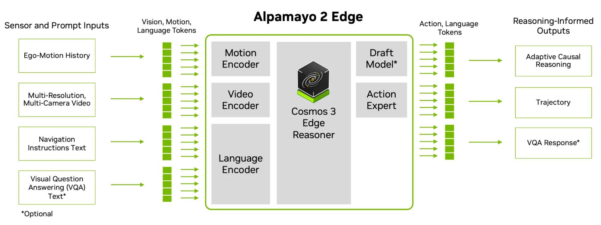
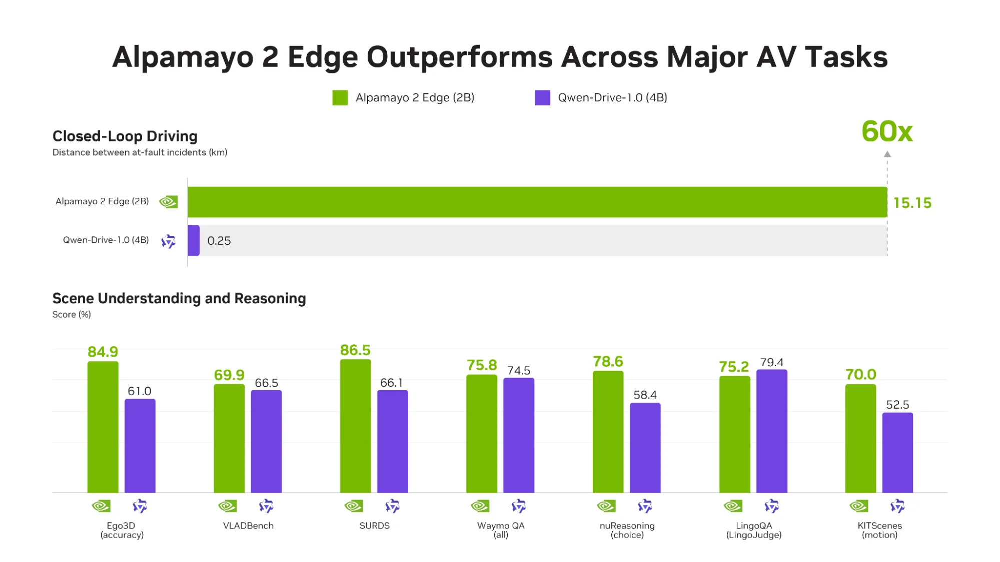
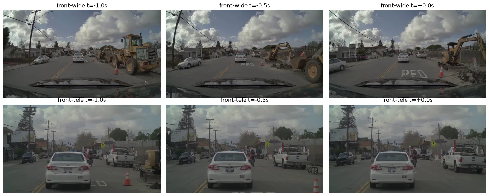
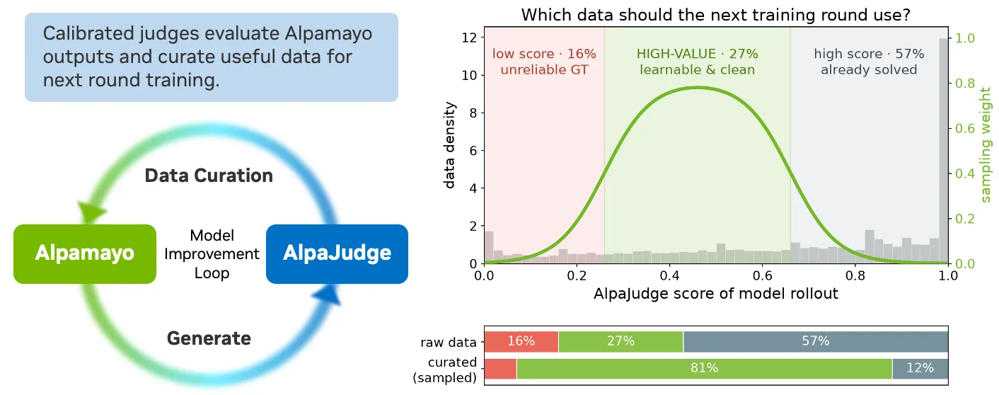
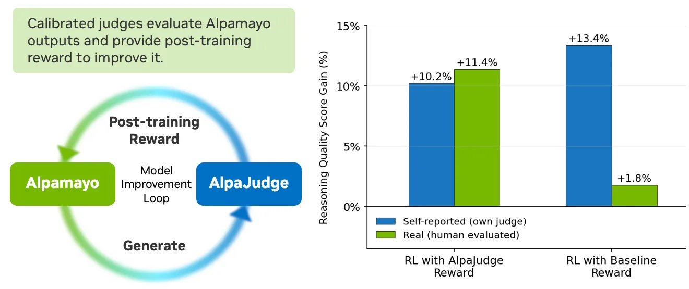

NVIDIA Alpamayo 2 Edge · AlpaJudge — 차량 안에서 돌아가는 추론 모델과, 그 추론을 채점하는 모델
작성일: 2026-11-12 (2판 — 용어 풀이 추가, Edge와 AlpaJudge 분리, Super 대비 비교표, 1차 자료 교차 확인) · 기사 게재일 2026-11-10
대상 자료: NVIDIA Technical Blog, Running AV Reasoning Models Within Onboard Compute and Latency Limits (Marco Pavone, Boris Ivanovic) [1]
출처 표기 원칙: 모든 사실 문장과 표 행에[번호]를 달고, 말미 출처 목록에 URL을 수록했다. 등급은 📄 기사 본문 · 🔍 기사가 링크한 1차 자료를 직접 열어 확인 · 🔗 URL만 기록(미열람). 기사 안의 파트너 인용 수치(PORT·Niulinx·Embedl)는 각 사의 자체 평가이며 NVIDIA가 독립 검증한 것은 아니므로 "파트너 자체 평가"로 따로 표기한다. 기사에 없는 설명(용어 풀이, Super와의 비교, 하네스 코드 구성)은 모델 카드·GitHub README에서 가져왔고, 작성자의 해석은 문장 안에 "해석"이라고 밝혔다.
그림: 기사 원본 도식 5장을images/에 저장해 수록했다(저작권은 NVIDIA에 있으며 인용 목적). 그림 설명은 기사 캡션을 번역하고, 그림을 어떻게 읽는지 덧붙였다.
1. 핵심 요약
두 가지를 발표했다. 하나는 차에 싣는 "작은 주행 모델", 다른 하나는 그 모델의 "설명을 채점하는 모델"이다.
- Alpamayo 2 Edge — 2B 파라미터짜리 주행 VLA(vision-language-action, 카메라 영상과 글을 읽고 차의 행동을 내놓는 모델). 서라운드 카메라 영상, 차량의 최근 움직임, 내비게이션 지시를 입력받아 "왜 이렇게 운전하는지" 설명(Chain-of-Causation, CoC)과 향후 6.4초 궤적을 함께 출력한다. 차량용 칩 NVIDIA DRIVE AGX Thor에서 실시간으로 돌리는 것이 목표다 [1][2].
- AlpaJudge — Alpamayo 같은 모델이 내놓은 "주행 설명 문장"이 타당한지 0~1 점수로 채점하는 별도의 판정 모델. 사람이 매긴 점수에 맞춰 보정(calibration)했다. 점수는 ① 모델 평가, ② 학습 데이터 고르기, ③ 강화학습 보상의 세 곳에 쓰인다 [1][6].
왜 만들었나: 큰 추론 모델은 똑똑하지만 차 안의 컴퓨터에 넣기엔 크고 느리다. 줄이면 설명 품질이 떨어질 수 있다. 그래서 "줄이는 기술"(Edge)과 "줄여도 설명이 멀쩡한지 재는 자"(AlpaJudge)를 함께 내놓았다 [1].
핵심 숫자
| 지표 | 값 | 뜻 | 출처 |
|---|---|---|---|
| Edge 모델 크기 | 백본 2.45B + 액션 전문가 0.2B | Alpamayo 2 Super(32B + 2.3B)의 약 1/14 | [2][4] |
| Thor에서 한 번 판단하는 데 걸리는 시간 | 160~190 ms (기사) / 180~250 ms (레시피 문서) | 카메라 픽셀이 들어가서 궤적이 나올 때까지. 설명을 길게 쓸수록 오래 걸린다 | [1][11] |
| 폐루프 RL 효과 | 주행 성능 +48.9% | 시뮬레이터에서 직접 운전해 보며 배우는 단계의 효과 | [1] |
| 과실 사고 간 거리 | 15.15 km vs 0.25 km | 시뮬레이터에서 자기 과실 사고 한 번 날 때까지 달린 거리. 클수록 좋다. 비교 대상 Qwen-Drive-1.0(4B)의 약 60배 | [1][2] |
| AlpaJudge 보상으로 RL | 설명 품질 +10.2%(판정 모델 기준) / +11.4%(사람 평가) | 두 숫자가 비슷하다는 것이 핵심(5.5절) | [1] |
| 데이터 고르기 | 중간 점수대 비중 27% → 81% | 배울 게 많은 데이터만 추려 다음 학습에 씀 | [1] |
2. 시사점
- "필요할 때만 생각한다"가 차량용 추론 모델의 새 설계 원칙이 됐다. Edge는 평범한 상황이면 설명을 쓰지 않고
<NOMINAL>("정상") 토큰 하나만 내보낸다. 글자를 안 만들면 그만큼 계산이 준다 [1][3]. 양자화 같은 사후 최적화보다 앞선, 모델 설계 수준의 지연 절감이다. 지연이 160~190 ms라는 범위로 제시된 이유도 여기 있다. 설명을 길게 쓰는 어려운 장면일수록 느려지므로, 안전 설계는 "가장 긴 설명" 기준으로 시간 예산을 잡아야 한다(해석). - 큰 모델은 선생님, 작은 모델은 학생이라는 역할 분담이 굳어졌다. Alpamayo 2 Super(34B)는 데이터에 설명 라벨을 자동으로 달아 주는 선생님이고, Edge(2B)는 그 라벨로 배워 차에 타는 학생이다 [1][5][10]. Niulinx는 학생인 Edge가 센서 구성이 다른 자사 차량에서 Super보다 궤적 오차가 작았다고 밝혔다(파트너 자체 평가) [1]. "작은 모델은 반드시 성능이 낮다"는 전제가 항상 맞지는 않는다는 신호다.
- "설명을 채점하는 모델"이 개발 루프의 한가운데에 들어왔다. 궤적 오차만 보면 "맞는 길로 갔지만 엉뚱한 이유를 댄" 경우를 못 잡는다. AlpaJudge는 그 틈을 메우고, 같은 점수를 평가·데이터 선별·RL 보상에 재사용한다 [1]. 앞으로는 판정 모델을 얼마나 사람 판단에 가깝게 만드느냐가 경쟁력이 된다(해석).
- 보상 모델을 잘못 고르면 모델이 "점수만 잘 받는 법"을 배운다는 것을 숫자로 보여줬다. 그림 5에서 기존 보상으로 학습한 모델은 자기 점수로는 +13.4% 좋아졌다고 했지만 사람이 보니 +1.8%에 그쳤다. AlpaJudge 보상은 +10.2% / +11.4%로 두 숫자가 일치했다 [1]. 자기 평가와 실제 평가가 벌어지는 현상이 "보상 해킹"이고, 사람에 맞춰 보정한 판정 모델이 그것을 막는다는 것이 이 그림의 메시지다.
- 학습 데이터는 "중간 난이도"가 가장 값지다는 실무 원칙을 제시했다. 점수가 아주 낮은 데이터는 정답 라벨 자체가 틀렸을 수 있고, 아주 높은 데이터는 이미 잘하는 쉬운 문제라 배울 게 없다. 중간 구간을 27%에서 81%로 늘려 다음 학습에 썼다 [1]. 자체 데이터를 가진 팀이 바로 따라 할 수 있다.
- 코드와 가중치가 거의 다 공개됐지만, 한 조각은 빠져 있다. Edge 가중치(OpenMDW-1.1), 추론 코드, Thor 배포 레시피, AlpaJudge 가중치·코드가 모두 공개다 [2][6][7][11]. 다만 Thor에서 속도를 내는 데 쓰는 DFlash2 드래프트 모델 가중치는 "모델 릴리스에 포함되지 않는다"고 레시피 문서가 밝힌다. 없으면 한 글자씩 생성하는 느린 방식으로 돌아간다 [11].
- NVIDIA 생태계 한 묶음이다. 모델(Alpamayo), 시뮬레이터(AlpaSim·AlpaGym·NuRec), 판정 모델(AlpaJudge), 배포 스택(TensorRT Edge-LLM·DRIVE OS), 데이터셋(PhysicalAI-AV)이 서로 맞물려 제공된다 [1][10]. 파트너들이 "며칠 안에" 실차·실시간 구동까지 갔다는 인용은 진입이 빠르다는 뜻이고 [1], 반대로 스택을 바꾸기는 어려워진다(해석).
3. 내용 정리 ① — 읽기 전에 알아둘 용어
처음 보는 사람을 위해, 이 글에 나오는 말을 쉬운 순서로 풀었다. 본문에서 다시 설명하지 않는다.
| 용어 | 쉬운 설명 |
|---|---|
| VLA (vision-language-action) | 카메라 영상(vision)과 글(language)을 읽고 행동(action, 여기서는 주행 궤적)을 내놓는 모델. 사람으로 치면 "보고, 읽고, 핸들을 돌리는" 일을 한 모델이 한다. |
| CoC (Chain-of-Causation, 인과 사슬) | 모델이 궤적과 함께 내놓는 "왜 이렇게 운전하는지" 설명문. 예: "교차로에서 감속 후 우회전, 도로가 비어 있으므로." [11] 일반 LLM의 Chain-of-Thought와 비슷하지만 주행 결정의 원인을 장면 속 사물과 연결하도록 형식을 맞춘 것이다 [2]. |
| 추론 트레이스 (reasoning trace) | 모델이 답을 내기 전에 써 내려가는 생각의 기록. 이 글에서는 CoC 문장이 곧 추론 트레이스다. |
| 온보드 / 엣지 | 차 안에 실린 컴퓨터에서 직접 돌리는 것. 반대말은 데이터센터(클라우드). |
| 지연 (latency) | 입력이 들어가서 결과가 나오기까지 걸리는 시간. 자율주행은 보통 100 ms 단위를 다툰다. |
| 디스틸레이션 (distillation, 증류) | 큰 모델(선생님)의 출력을 작은 모델(학생)이 따라 배우게 하는 학습법. 여기서는 Super가 만든 설명문을 Edge가 받아쓰며 배운다 [1]. |
| 오토라벨 (auto-label) | 사람 대신 모델이 데이터에 붙인 정답 라벨. Super가 주행 영상에 CoC 설명을 자동으로 달아 주는 것이 "CoC 오토라벨"이다 [5]. |
| 오픈루프 / 폐루프 평가 | 오픈루프: 녹화된 영상을 보여주고 모델의 예측을 정답과 비교. 모델의 행동이 다음 장면에 영향을 주지 않는다. 폐루프: 시뮬레이터 안에서 모델이 실제로 운전하고, 그 결과로 바뀐 장면을 다시 입력받는다. 실제 주행에 가깝다 [5]. |
| minADE | 오픈루프 지표. 모델이 낸 여러 궤적 후보 중 가장 좋은 것과 실제 궤적의 평균 거리(m). 작을수록 좋다. minADE_6은 후보 6개 중 최선 기준이다 [2]. |
| 과실 사고 간 거리 | 폐루프 지표. 시뮬레이터에서 "자기 과실 충돌 또는 도로 이탈"이 한 번 생길 때까지 달린 평균 거리(km). 클수록 좋다 [2]. |
| RL (강화학습) · GRPO | 정답을 베끼는 대신 "행동의 결과에 점수(보상)를 매겨" 배우는 방식. GRPO는 같은 입력에 여러 답을 뽑아 서로 비교해 보상을 정하는 RL 알고리즘의 하나다 [1]. |
| 보상 모델 · 보상 해킹 | 보상 모델: RL에서 점수를 매겨 주는 모델. 보상 해킹: 학습 중인 모델이 "진짜 잘하는 법" 대신 "점수 잘 받는 꼼수"를 배우는 현상. 예: 그럴듯한 문장만 길게 써서 점수를 받고 운전은 틀리는 경우 [1]. |
| 루브릭 (rubric) | 채점 기준표. 학교에서 "근거 제시 2점, 논리 3점"처럼 항목별로 점수를 매기는 그 표다. AlpaJudge-RF는 루브릭 항목 5개로 설명문을 채점한다 [6]. |
| 데이터 큐레이션 (curation) | 모아 둔 데이터 중 학습에 쓸 것을 고르고 비중을 조절하는 일. 박물관 큐레이터가 전시품을 고르는 것과 같은 뜻이다. |
| 양자화 (quantization) · FP8 / BF16 | 모델 숫자를 더 적은 비트로 저장해 메모리와 계산을 줄이는 것. BF16은 16비트, FP8은 8비트. FP8로 줄이면 빨라지지만 정확도 손실을 점검해야 한다 [11]. |
| speculative decoding (추측 디코딩) | 글자를 한 번에 하나씩 만드는 LLM의 느린 생성을 빠르게 하는 기법. 작은 "초안 모델"(drafter)이 여러 글자를 먼저 써 놓고, 큰 모델이 한 번에 검사해서 맞으면 그대로 쓴다. 결과는 큰 모델이 혼자 쓴 것과 같고 속도만 빨라진다 [8][11]. |
| TensorRT · 엔진 | NVIDIA GPU용 추론 최적화 도구. 학습용 PyTorch 모델을 특정 GPU에 맞춘 실행 파일("엔진")로 바꾼다. TensorRT Edge-LLM은 차량·로봇용 칩을 위한 LLM 전용 버전이다 [11]. |
| 하네스 (harness) | 여기서는 "엔진들을 순서대로 불러 한 번의 추론을 끝까지 실행하고 시간을 재는 파이썬 실행 스크립트"를 뜻한다. 시험대·고정 장치라는 원뜻에서 온 말이다 [11]. |
4. 내용 정리 ② — Alpamayo 2 Edge (차에 싣는 주행 모델)
4.1 한 줄 정의와 위치
Alpamayo 2 Edge는 NVIDIA Alpamayo 모델 가족(1 Nano, 1.5 Nano, 2 Super, 2 Edge) 중 가장 작은 2B 모델로, 차량 탑재용이다. 가족 안에서 Super는 "오토라벨·디스틸레이션의 선생님", Edge는 "차량 컴퓨트에 맞춘 출발점"으로 역할이 나뉜다 [10]. Hugging Face 공개일은 2026-11-10이고 가중치는 OpenMDW-1.1, 코드는 Apache 2.0 라이선스다 [2][3].
4.2 Alpamayo 2 Super와 무엇이 다른가
같은 회사의 큰 형(Super)과 나란히 놓으면 Edge의 설계 의도가 보인다. 두 모델의 오픈루프·폐루프 수치는 평가 조건이 달라 직접 비교할 수 없으므로 표에서 따로 표시했다.
| 항목 | Alpamayo 2 Super | Alpamayo 2 Edge | 출처 |
|---|---|---|---|
| 공개일 | 2026-08-04 | 2026-11-10 | [4][2] |
| 역할 | 개발용 기반 모델: 오토라벨 선생님, 학습 데이터 생성, 평가 | 차량 탑재용 학생 모델, 파인튜닝 출발점 | [5][10] |
| 크기 | 백본 32B + 액션 전문가 2.3B (약 34B) | 백본 2.45B(언어 1.96B + 비전 0.41B + 연결부 0.08B) + 액션 전문가 0.2B | [4][2] |
| 백본 | Cosmos 3 Super Reasoner | Cosmos 3 Edge (Nemotron 기반) | [4][2] |
| 카메라 입력 | 최대 7대, 카메라당 4프레임 | 6대, 총 22프레임(전방 광각·망원 5장씩, 나머지 4대 3장씩) | [5][2] |
| 출력 | 궤적, CoC, 메타액션, VQA + 2D 바운딩 박스, 구조화 오토라벨 | 궤적, CoC, VQA | [4][2] |
적응형 추론(<NOMINAL>) |
기사·모델 카드에 언급 없음 | 있음 | [1][3] |
| 추론 가속 | — | DFlash2 speculative decoding, TensorRT Edge-LLM FP8 레시피 | [1][11] |
| 실행 메모리 | 내비 CFG 샘플링 시 70 GB 이상 GPU 2장 | H100 측정 12.06 GiB, 권장 16 GB 이상 | [5][2] |
| LingoQA (같은 벤치마크, 비교 가능) | 79.2 | 75.2 | [5][2] |
| 오픈루프 (조건 다름) | minADE_6 @6.4 s = 0.911 m, 어려운 1,434 샘플 | minADE_6 @5 s = 0.52 m, 1,392 샘플 | [4][2] |
| 폐루프 (지표 다름) | AlpaSim Score 1.50 ± 0.13, 913 장면 | 과실 사고 간 거리 15.15 ± 0.04 km, 875 장면 × 3회 | [4][2] |
| 라이선스 | 가중치 OpenMDW-1.1, 코드 Apache 2.0 | 동일 | [4][2] |
읽는 법: Edge는 Super의 기능 중 메타액션·2D 접지·오토라벨을 덜어내고, 궤적과 설명에 집중한 뒤, 추론을 생략하는 기능과 배포 레시피를 더했다. LingoQA 4점 차이는 "14배 작은 모델이 설명 품질을 얼마나 지켰는가"를 보여주는 유일한 동일 조건 비교다. 기사가 비교 대상으로 쓴 Qwen-Drive-1.0은 4B 모델이라는 것 외에 기사에 설명이 없다 [1].
4.3 모델 구조

그림 1. 왼쪽 네 가지 입력(에고 모션 히스토리, 멀티 해상도 멀티 카메라 영상, 내비게이션 텍스트, 선택적 VQA 질문)이 각각 모션·비디오·언어 인코더를 거쳐 토큰이 되고, 가운데 Cosmos 3 Edge Reasoner가 이를 읽는다. 오른쪽 드래프트 모델(선택)과 액션 전문가가 각각 설명 생성 가속과 궤적 생성을 맡아, 적응형 인과 추론 · 궤적 · VQA 응답을 내놓는다 [1].
| 구성 요소 | 하는 일 | 출처 |
|---|---|---|
| 모션 인코더 | 지난 1.9초간 0.1초 간격 20개 차량 위치·자세를 토큰으로 바꿈 | [2][3] |
| 비디오 인코더 (SigLIP2, 0.41B) | 카메라 22프레임을 토큰으로 바꿈. 전방 카메라는 더 많은 픽셀, 측후방은 적은 픽셀(멀티 해상도) | [2][3] |
| 언어 인코더 | 내비게이션 지시("30 m 앞에서 우회전")와 질문을 토큰으로 | [2][3] |
| Cosmos 3 Edge Reasoner (1.96B) | 모든 토큰을 읽고 CoC 설명을 씀. 설명 끝의 내부 표현을 액션 전문가에 넘김 | [2] |
| 드래프트 모델 (DFlash2, 선택) | 설명을 빨리 쓰기 위한 초안 모델. 4.5절 | [1][11] |
| 액션 전문가 (0.2B, 디퓨전) | 설명과 장면 표현을 받아 0.1초 간격 64개 지점(6.4초) 궤적을 생성. 가속도·곡률을 예측하고 자전거 모델로 적분 | [2] |
출력 궤적 후보는 여러 개 뽑을 수 있고, 후보마다 설명을 따로 쓴다(기본 1개, 노트북 예제는 6개) [2][3].
4.4 적응형 추론과 <NOMINAL> 토큰
- 무엇인가: 모델이 장면을 보고 "평범한 상황"이라고 판단하면 CoC 설명문 대신
<NOMINAL>이라는 특수 토큰 하나만 출력하고 바로 궤적으로 넘어간다. 설명을 쓰지 않으니 토큰 생성 시간과 연산이 줄어든다 [1]. - 왜 중요한가: LLM의 지연은 대부분 글자를 한 개씩 만드는 시간이다. 레시피 문서 기준으로 Thor에서 설명 한 묶음(드래프터 1라운드)에 약 12 ms가 들고, 어려운 장면은 라운드가 7번까지 늘어난다 [11]. 평상시 설명을 생략하면 그 시간이 통째로 사라진다.
- 새로운 기법인가: Alpamayo 가족 안에서는 Edge가 처음이다. Super의 모델 카드·블로그에는 이 기능이 없고, 공식 저장소도 Edge를 "적응형 추론"으로 구분한다 [3][4][5][10]. 발상 자체는 일반 LLM에서 "생각 모드를 켜고 끄는" 기능과 같다. 차이는 켜고 끄기를 사용자가 아니라 모델이 장면을 보고 스스로 정한다는 점이다(해석).
- 주의: 기사는 "언제 NOMINAL을 내는지"의 기준이나 그 비율을 공개하지 않았다 [1].
4.5 어떻게 학습·최적화했나
기사는 아래 일곱 가지를 Edge의 "new features"라고 묶었다. 무엇에 대해 새롭다는 것인지 기사가 명시하지 않았는데, 문맥상 이전 Alpamayo 공개 모델(1.5 Nano, 2 Super) 대비로 읽힌다(해석) [1].
| 기법 | 쉬운 설명 | 출처 |
|---|---|---|
| 2B Nemotron 백본 | 차량 칩에 들어갈 크기로 처음부터 작은 백본을 골랐다 | [1][2] |
| 적응형 추론 | 4.4절 | [1] |
| 오프라인 디스틸레이션 | Super가 주행 영상에 자동으로 달아 준 CoC 설명 라벨을 Edge가 정답 삼아 배웠다. 사람이 수백만 개 설명을 쓸 수 없으니 큰 모델이 대신 쓴 것이다. Edge 학습 데이터에는 CoC 트레이스가 약 370만 개 들어 있고, 모델 카드는 이를 "합성 추론 트레이스"라고 부른다 [1][2]. Super의 오토라벨 품질은 전문가 라벨과 0.652 유사도(내부 8천 클립, 내부 판정 모델 기준)로 보고되어 있다 [5]. | |
| 폐루프 RL (AlpaGym) | 시뮬레이터 안에서 직접 운전해 보고 결과(충돌, 이탈)로 보상을 받아 배운다. RL 없는 최고 체크포인트 대비 폐루프 주행 성능 +48.9% | [1] |
| 멀티 해상도 입력 | 중요한 전방 카메라는 고해상도, 나머지는 저해상도로 넣어 토큰 수를 아낀다 | [1][2] |
| DFlash2 speculative decoding | 아래 상세 | [1][8] |
| TensorRT·TensorRT-Edge-LLM 레시피 | 4.7절 | [1][11] |
DFlash2가 무엇인가
- DFlash는 z-lab(Chen, Liang, Liu, 2026, arXiv 2602.06036)이 만든 speculative decoding용 초안 모델이다. 특징은 "블록 디퓨전": 초안 글자를 한 개씩이 아니라 한 블록(여러 글자)을 동시에 생성한다. DFlash 2는 2026년 8월에 Inco AI가 내놓은 후속판이다 [8][9].
- 동작: 작은 DFlash2 드래프터가 설명문 16토큰짜리 블록을 먼저 쓰고, Edge 본 모델이 그 블록을 한 번에 검사해 맞는 부분까지 채택한다. 그래서 결과는 본 모델이 혼자 쓴 것과 같다. 레시피 문서는 "모든 테스트 클립에서 그리디 디코딩과 같은 설명문을 재현했다"고 적었다 [11].
- 효과: Thor에서 한 글자씩 쓰면 약 7 ms/토큰, DFlash2 라운드는 12 ms에 여러 토큰을 처리한다 [11].
- 제공 여부: DFlash2 드래프터 가중치는 Edge 모델 릴리스에 포함되지 않는다. 없으면 레시피는 초안 단계를 건너뛰고 그리디 디코딩으로 돌아간다 [11]. Alpamayo 1.5용 DFlash2 드래프터를 직접 학습하는 레시피는 공개되어 있다 [10].
4.6 성능

그림 2. 위: 폐루프 주행에서 과실 사고 간 거리(km, 클수록 좋음). 아래: 장면 이해·추론 벤치마크 7종 점수(%). 초록이 Alpamayo 2 Edge(2B), 보라가 Qwen-Drive-1.0(4B) [1].
읽는 법: 위 막대는 "자기 과실 사고 한 번 나기까지 몇 km를 달렸나"다. Edge 15.15 km, Qwen 0.25 km로 약 60배 차이다. 모델 카드 기준으로 이 수치는 PhysicalAI-AV-NuRec 875개 장면을 각 3회 주행한 평균이고, 과실 사고는 "도로 이탈 또는 자기 과실 충돌"로 정의된다 [2]. 아래 막대 7쌍 중 LingoQA 한 항목만 Qwen이 앞선다(79.4 vs 75.2). 기사 캡션의 "거의 모든 항목에서 우세"는 이 예외를 뜻한다 [1].
| 지표 | Alpamayo 2 Edge (2B) | Qwen-Drive-1.0 (4B) | 출처 |
|---|---|---|---|
| 폐루프: 과실 사고 간 거리 (↑) | 15.15 km | 0.25 km | [1][2] |
| 오픈루프: minADE (↓) | 0.53 m | 1.68 m | [1] 그림 2 대체 텍스트 |
| Ego3D (accuracy) | 84.9 | 61.0 | [1] 그림 2 |
| VLADBench | 69.9 | 66.5 | [1] 그림 2 |
| SURDS | 86.5 | 66.1 | [1] 그림 2 |
| Waymo QA (all) | 75.8 | 74.5 | [1] 그림 2 |
| nuReasoning (choice) | 78.6 | 58.4 | [1] 그림 2 |
| LingoQA (LingoJudge) | 75.2 | 79.4 | [1] 그림 2 |
| KITScenes (motion) | 70.0 | 52.5 | [1] 그림 2 |
파트너 코멘트 — 모두 각 사의 자체 평가이며 기사에 인용된 그대로다 [1].
| 파트너 (발언자) | 내용 |
|---|---|
| PORT (Matas Simonavicius, CTO) | 조기 접근 며칠 안에 자사 런던 주행 기록의 NuRec 재구성에서 폐루프 구동. 초기 시뮬레이션에서 Alpamayo 1.5 대비 차선 유지 성공 2배 이상, 차선 이탈 복구 약 40% 더 많음, 같은 GPU에서 수작업 튠한 Alpamayo 1.5 서버보다 계획 속도 약 2배 |
| Niulinx (Luca Crotti, 공동창업자) | 센서 구성이 크게 달라도 제로샷에서 Alpamayo 2 Super 대비 minADE 13.6% 감소, 3초 횡방향 RMSE 46.1% 감소. 자체 데이터 파인튜닝으로 Edge 기준 대비 minADE 추가 44.2% 감소. 며칠 안에 실차 첫 테스트(영상 1: 교통 경찰 수신호에 정차, 횡단보도 보행자 양보) |
| Embedl (Hans Salomonsson, CEO) | 48시간 안에 AGX Thor에서 10 Hz 실시간 계획 구동(영상 2: PyTorch 구동 vs Embedl 최적화 구동 비교) |
4.7 DRIVE AGX Thor 배포: 레시피, 하네스, 제공 범위
기본 형태: Hugging Face에서 받는 가중치는 BF16 PyTorch 모델이라 지원되는 NVIDIA GPU 어디서나 바로 돌릴 수 있다(권장 메모리 16 GB 이상). Thor에서 실시간으로 돌리려면 별도 최적화가 필요하다 [1][2][3].
레시피란: Alpamayo Developer Hub(GitHub NVlabs/alpamayo-recipes)의 recipes/alpamayo2edge_edgellm/ 폴더에 있는, 순서대로 따라 하면 Thor용 엔진이 만들어지는 문서+스크립트 묶음이다. 코드는 Apache 2.0으로 공개되어 있다 [10][11].
| 단계 | 어디서 | 하는 일 | 출처 |
|---|---|---|---|
| 1. 스테이징 | x86 호스트 PC | Edge 체크포인트와(있다면) DFlash2 드래프터 다운로드, 가중치 배치를 내보내기 도구가 읽는 형태로 변환 | [11] |
| 2. FP8 캘리브레이션 | 호스트 | 실제 카메라 프레임을 흘려 보내 FP8로 줄일 때의 스케일 값을 정함. 비전 인코더 앞부분은 FP16 유지 | [11] |
| 3. ONNX 내보내기 | 호스트 | 언어 모델·비전·액션 전문가·드래프터를 각각 ONNX 그래프로 변환. 출력 어휘를 CoC에 실제 쓰이는 2,211개 토큰으로 축소 | [11] |
| 4. 엔진 빌드 | Thor 보드 | TensorRT Edge-LLM 플러그인으로 엔진 생성(언어·비전 약 15분, 액션 약 10분, 드래프터 약 5분) | [11] |
| 5. 파이썬 하네스 실행 | Thor 보드 | thor/run.py가 엔진들을 순서대로 호출해 한 클립을 끝까지 추론하고, 설명문·궤적(output.json)과 단계별 시간(profile.json)을 기록 |
[1][11] |
| 6. 품질 검사 | 호스트 | 같은 입력·같은 난수로 돌린 BF16 PyTorch 결과와 궤적을 비교 | [1][11] |
파이썬 하네스가 하는 일 (기사의 python -m alpamayo2edge_edgellm.runtime.run 명령이 이것이다) [1][11]:
- 모든 궤적 후보가 공유하는 프리필(prefill, 입력 토큰을 한 번에 읽는 단계)을 한 번만 실행.
- 카메라 프레임 인코딩 결과를 이미지별로 캐시. --rolling 옵션은 "매 틱마다 새로 들어온 프레임만" 인코딩 시간에 포함해, 실제 스트리밍 환경을 흉내 낸다.
- DFlash2 드래프트 엔진으로 speculative decoding.
- 액션 전문가가 언어 모델의 K/V 캐시를 복사 없이 그대로 읽음.
- 기준 환경: DRIVE AGX Thor-X, DRIVE OS 7.2.7.0, CUDA 13.4, TensorRT 11.3.1.9 [1][11].
실행 명령(기사 원문) [1]:
python -m alpamayo2edge_edgellm.runtime.run \
--engines "$WORK/engines" \
--model "$MODEL" \
--reference "$INPUTS" \
--dflash2 \
--rolling \
--warmup 1 \
--repeat 5 \
--output "$WORK/results.json"
지연 수치 두 가지 — 기사는 160~190 ms, 레시피 문서는 "공개 예제 클립 약 220 ms, 내부 검증 10클립에서 180~250 ms"라고 적었다. 레시피 문서는 자기 수치를 "벤치마크가 아닌 참고치이며 보드·OS·클립에 따라 움직인다"고 못 박았다 [1][11]. 레시피 문서의 단계별 시간은 다음과 같다(FP8, 후보 6개, Euler 5스텝) [11].
| 단계 | 시간 |
|---|---|
| 비전 인코더 (새 프레임 6장) | 약 20 ms |
| 프리필 (약 3,300 토큰) | 약 75 ms |
| CoC 생성, 드래프터 1라운드(초안+검증) | 약 12 ms × 1~7라운드 |
| 액션 전문가 (5스텝 × 6후보) | 약 70 ms |
FP8로 줄였을 때의 정확도 손실은 내부 10클립 기준 minADE_6 1.547 m(FP8) vs 1.570 m(FP16)로 거의 없었다 [11].
5. 내용 정리 ③ — AlpaJudge (주행 설명을 채점하는 모델)
5.1 한 줄 정의
AlpaJudge는 모델이다. 정확히는 "자율주행 모델이 쓴 주행 설명문이 타당한지 채점하도록 학습된 판정 모델 가족"이고, 체크포인트 두 개(RB, RF)가 Hugging Face nvidia/alpajudge에 공개되어 있다. 가중치는 OpenMDW-1.1, 코드는 Apache 2.0이다 [6][7].
무엇을 채점하나: Alpamayo(또는 다른 모델)가 출력한 CoC 설명문, 그리고 오토라벨처럼 사람이 아닌 모델이 쓴 설명 라벨. 궤적 자체를 채점하는 것이 아니다. 공식 설명은 "인과적 주행 설명을 채점해 추론 품질을 평가하고, 약한 라벨을 거르고, 학습 데이터 수동 검토를 줄인다"다 [6].
5.2 왜 필요한가
궤적 지표(minADE, 과실 사고 간 거리)는 "차가 어디로 갔나"만 본다. "맞는 길로 갔지만 이유가 엉터리"인 경우, 즉 설명이 장면 속 실제 원인을 짚지 못하거나 결정과 안 맞는 경우를 잡지 못한다. 모델을 작게 줄일 때 이런 품질 저하가 생기기 쉬워서, 기사는 설명 품질을 숫자로 재는 자가 필요하다고 본다 [1].
5.3 두 가지 변형: 무엇을 주면 무엇을 돌려주나
| AlpaJudge-RB (reference-based, 참조 기반) | AlpaJudge-RF (reference-free, 참조 없음) | 출처 | |
|---|---|---|---|
| 입력 | 질문 + 정답 설명(참조) + 채점할 설명. 이미지 없음 | 전방 광각 3프레임 + 전방 망원 3프레임(−1.0, −0.5, 0.0초) + 차량의 메타액션(과거·미래) + 채점할 설명 | [6][7] |
| 출력 | 정렬 확률 1개 (0~1): "참조 설명과 얼마나 같은 말을 하나" | 루브릭 항목 5개 확률 + 합산 점수 3개 | [6][7] |
| 하는 일 | 정답과의 일치도 측정. 장면을 직접 보지 않는다 | 영상과 차량 행동을 직접 보고 설명이 맞는지 판단 | [6] |
| 쓰임 | 정답 라벨이 있는 데이터 채점, RL 보상 | 정답 라벨이 없는 실제 주행 로그 채점 | [1] |
| 필요 자원 | 텍스트 모델 | GPU 권장, 가중치 약 5 GB | [6] |
RF의 루브릭 5개와 점수 계산 [6]:
| 항목 | 묻는 것 |
|---|---|
| p_match (행동 일치) | 설명이 말하는 행동이 차량의 실제 행동과 같은가 |
| p_safe (행동 안전) | 그 행동이 안전한가 |
| p_grounded (근거 접지) | 설명이 언급한 사물·상황이 실제 영상에 있는가 |
| p_complete (근거 완전) | 중요한 원인을 빠뜨리지 않았는가 |
| p_causal (인과 일관) | 원인 → 행동의 연결이 논리적인가 |
- action = p_match × (1 + p_safe) / 2
- component = 평균(p_grounded, p_complete, p_causal)
- overall = 0.6 × action + 0.4 × component
읽는 법: "행동이 맞는가"에 60%, "설명이 장면에 근거하는가"에 40%를 준다. 행동이 틀리면(p_match ≈ 0) 설명이 아무리 그럴듯해도 action 점수가 0에 가까워진다. 예제 노트북의 공사 구간 샘플은 RB 0.999, RF overall 0.842가 나오지만, 공식 문서는 이 값이 "추론 경로가 동작하는지 확인용이지 벤치마크나 권장 기준점이 아니다"라고 밝힌다 [1][6].
5.4 믿을 수 있는 모델인가
- "사람 기준으로 보정했다"의 의미: 사람이 매긴 점수에 가깝게 나오도록 학습·조정했다는 뜻이다. 기사가 제시한 근거는 그림 5 하나다. AlpaJudge 보상으로 학습한 모델의 품질 향상을 AlpaJudge 자신이 +10.2%, 사람이 +11.4%로 평가해 두 숫자가 거의 같았다 [1].
- 공개되지 않은 것: 사람 평가자와의 일치율, 학습 데이터, 학습 방법은 기사와 공개 저장소에 없다. 저장소는 "학습 코드와 데이터 파이프라인은 포함하지 않는다"고 명시한다 [6].
- 공식 한계 [6]: RB는 참조와의 일치만 재므로 참조 자체가 틀리면 같이 틀린다. RF는 프레임 동기화와 메타액션 형식이 정확해야 하고, 영상 디코더나 메타액션 추출기는 패키지에 없다.
- 종합하면 "NVIDIA가 자체 개발 루프에 쓰는 판정 모델을 공개한 것"이며, 외부 검증 수치는 아직 없다. 자기 데이터에 쓸 때는 일부를 사람이 채점해 일치율을 먼저 확인하는 것이 안전하다(해석).
5.5 세 가지 쓰임새
쓰임 1: 모델이 쓴 설명 채점하기
- AlpaJudge 저장소에서 환경을 설치하고 예제 노트북을 연다(
uv sync --locked --dev,hf auth login,uv run jupyter lab examples/alpajudge_pai.ipynb) [1][6]. - 노트북은 PhysicalAI-AV 클립
030c760c-…의 5.1초 시점을 쓰고, 고정된 공사 구간 샘플로 RB와 RF를 한 번씩 돌린다. 예제 설명문과 메타액션은 수동 작성이라 다른 시점을 쓰려면 함께 바꿔야 한다 [1][6]. - Edge를 평가하려면 같은 클립에 Edge 추론을 돌려
output.json의text.cot에 든 설명문을 꺼내, 노트북의 수동 설명 자리에 넣는다. 정답 설명이 있으면 RB에 answer로, Edge 설명을 student로 넘긴다 [1]. - 출력에 클립 ID·시각·카메라·행동 맥락을 남겨 낮은 점수를 장면까지 추적한다. 설명 점수는 충돌·이탈·궤적 지표와 함께 보고한다 [1].

그림 3. 노트북에 쓰인 클립의 여러 시점 카메라 프레임 [1].
쓰임 2: 다음 학습에 쓸 데이터 고르기(큐레이션)

그림 4. 왼쪽: Alpamayo가 생성 → AlpaJudge가 채점 → 데이터 선별 → 다시 학습하는 루프. 오른쪽 위: 모델 출력에 매긴 AlpaJudge 점수의 분포(회색 막대)와 샘플링 가중치(초록 곡선). 오른쪽 아래: 선별 전후 비중 [1].
그림 4 읽는 법: 가로축이 AlpaJudge 점수(0~1)다. 왼쪽 빨간 구간(점수 약 0.25 이하, 16%)은 "정답 라벨이 못 미더운" 데이터, 오른쪽 회색 구간(약 0.65 이상, 57%)은 "이미 잘 푸는" 데이터, 가운데 초록 구간(27%)이 "배울 수 있고 깨끗한" 데이터다. 초록 곡선이 가운데에서 높다는 것은 그 구간을 많이 뽑는다는 뜻이다. 그 결과 아래 막대처럼 중간 구간 비중이 27%에서 81%로 올라가고 양 끝은 줄어든다 [1].
주의점 [1]: - 점수가 아주 낮다고 바로 버리면 안 된다. 라벨 오류일 수도 있지만 "진짜 어려운 희귀 상황"일 수도 있어서, 일괄 삭제하면 모델이 꼭 배워야 할 실패 사례가 사라진다. 사람이 검토한다. - 적용 절차: 클립마다 후보 설명 생성 → 고정된 AlpaJudge 체크포인트로 채점 → 점수·클립 ID·시나리오 정보 기록 → 저점·안전 중요 사례 수동 검토 → 개발용 데이터에서 기준점 정하기 → 장면 유형별로 고르게 섞기 → 평가용 데이터는 건드리지 않기 → 다시 학습해 같은 기준 데이터로 비교.
쓰임 3: 강화학습의 보상으로 쓰기

그림 5. 왼쪽: Alpamayo가 생성 → AlpaJudge가 채점해 보상 → 다시 학습하는 루프. 오른쪽: 두 가지 보상으로 RL을 했을 때 설명 품질이 얼마나 좋아졌는지. 파란 막대는 "학습에 쓴 판정 모델 자신이 매긴 향상", 초록 막대는 "사람이 평가한 실제 향상". Alpamayo 2 Super 기반 RL 이전 모델에서 측정 [1].
그림 5 읽는 법: 막대 묶음이 둘이다. 왼쪽 "AlpaJudge 보상"은 자기 점수 +10.2%, 사람 평가 +11.4%로 두 막대가 비슷하다. 오른쪽 "기존 보상"은 자기 점수 +13.4%인데 사람 평가는 +1.8%로 크게 벌어진다. 벌어진다는 것은 모델이 "판정 모델이 좋아할 글"만 배우고 실제 설명은 거의 나아지지 않았다는 뜻, 즉 보상 해킹이다. 파란 막대가 높다고 좋은 게 아니라 파란색과 초록색이 가까울수록 믿을 수 있는 보상이라고 읽어야 한다 [1].
구현 방법 [1]:
- 공개 Alpamayo RL 레시피(GRPO)는 궤적 오차·승차감 점수에 "플러그형 설명 채점기"를 더해 하나의 보상으로 합친다. 각 샘플에 정답 설명이 있으면 AlpaJudge-RB를 그 채점기로 꽂을 수 있다.
- 코드로는 BaseReasoningGrader.score(predictions, references) 인터페이스를 score_reference_based 호출로 구현한 어댑터를 GRADER_REGISTRY에 등록한다.
- 보상 해킹 방지 설계: 궤적 게이트(궤적이 일정 품질을 넘어야 설명 점수가 반영됨)를 유지하고, 궤적 점수와 설명 점수를 따로 기록한다. 설명만 그럴듯하게 써서 총점을 올리는 길을 막기 위해서다.
6. 미확인·유의 사항
- 파트너 3사(PORT·Niulinx·Embedl)의 수치는 기사에 인용된 자체 평가이며 평가 조건이 공개되지 않았다 [1].
- 지연 수치가 기사(160~190 ms)와 레시피 문서(180~250 ms)에서 다르다. 레시피 문서는 자기 수치를 참고치라고 밝혔고, 측정 클립과 설정이 다를 수 있다 [1][11].
- Edge와 Super의 오픈루프·폐루프 수치는 샘플 수·예측 시간·지표가 달라 직접 비교할 수 없다. 같은 조건 비교는 LingoQA뿐이다 [2][4][5].
<NOMINAL>을 내는 판단 기준과 평상시 비율, AlpaJudge의 사람 평가 일치율과 학습 방법은 공개되지 않았다 [1][6].- 기사가 비교 대상으로 쓴 Qwen-Drive-1.0(4B)은 기사에 설명이 없고 이번 작성에서도 조사하지 않았다(출처 미확인).
- 장면 이해·추론 벤치마크 7종의 개별 점수는 기사 본문에 없고 그림 2 이미지 속 숫자를 옮긴 것이다. Edge 모델 카드의 표와 소수점 반올림 수준에서 일치한다 [1][2].
- AlpaGym 저장소, RL 레시피 README, Cosmos 페이지, 개발자 포럼은 URL만 기록하고 열어 보지 않았다.
출처
- 📄 NVIDIA Technical Blog — Running AV Reasoning Models Within Onboard Compute and Latency Limits (Marco Pavone, Boris Ivanovic) — 2026-11-10 — https://developer.nvidia.com/blog/running-av-reasoning-models-within-onboard-compute-and-latency-limits/
- 🔍 Hugging Face — nvidia/Alpamayo2-Edge 모델 카드 (파라미터 구성·입출력·벤치마크·메모리·라이선스) — 2026-11-10 공개 — https://huggingface.co/nvidia/Alpamayo2-Edge
- 🔍 GitHub NVlabs/alpamayo2-edge — README (추론 코드, 입력 프로필, 가속 옵션) — https://github.com/NVlabs/alpamayo2-edge
- 🔍 Hugging Face — nvidia/Alpamayo2-Super 모델 카드 (34B 구성·입출력·평가) — 2026-08-04 공개 — https://huggingface.co/nvidia/Alpamayo2-Super
- 🔍 NVIDIA Technical Blog — Generate Trajectories, Reasoning Traces, and Auto-Labels with NVIDIA Alpamayo 2 Super — https://developer.nvidia.com/blog/generate-trajectories-reasoning-traces-and-auto-labels-with-nvidia-alpamayo-2-super/
- 🔍 GitHub NVlabs/alpajudge — README (RB·RF 입력 계약, 점수 공식, 한계) — https://github.com/NVlabs/alpajudge
- 🔍 Hugging Face — nvidia/alpajudge 모델 카드 (체크포인트 2종, 라이선스) — https://huggingface.co/nvidia/alpajudge
- 🔍 GitHub z-lab/dflash — README (DFlash·DFlash 2 개요, 지원 모델) — https://github.com/z-lab/dflash
- 🔗 arXiv 2602.06036 — DFlash: Block Diffusion for Flash Speculative Decoding (Chen, Liang, Liu) — 2026 — https://arxiv.org/abs/2602.06036
- 🔍 GitHub NVlabs/alpamayo-recipes — README (Alpamayo Developer Hub, 모델 가족·레시피 목록) — https://github.com/NVlabs/alpamayo-recipes
- 🔍 GitHub NVlabs/alpamayo-recipes — recipes/alpamayo2edge_edgellm/README.md (Thor 배포 레시피, 단계별 지연, 하네스 구성) — https://github.com/NVlabs/alpamayo-recipes/blob/main/recipes/alpamayo2edge_edgellm/README.md
- 🔗 GitHub NVlabs/alpagym — AlpaGym 폐루프 RL 프레임워크 — https://github.com/NVlabs/alpagym
- 🔗 GitHub NVlabs/alpamayo-recipes — recipes/alpamayo1_x_rl/README.md (GRPO RL 레시피) — https://github.com/NVlabs/alpamayo-recipes/blob/main/recipes/alpamayo1_x_rl/README.md
- 🔗 NVIDIA Developer Forums — Alpamayo 포럼 — https://forums.developer.nvidia.com/c/autonomous-vehicles/alpamayo/766
- 🔗 NVIDIA — Cosmos 소개 페이지 — https://www.nvidia.com/en-us/ai/cosmos/